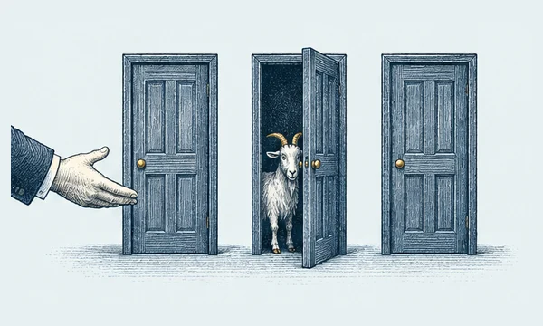
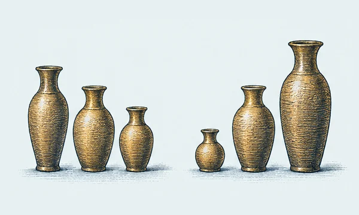
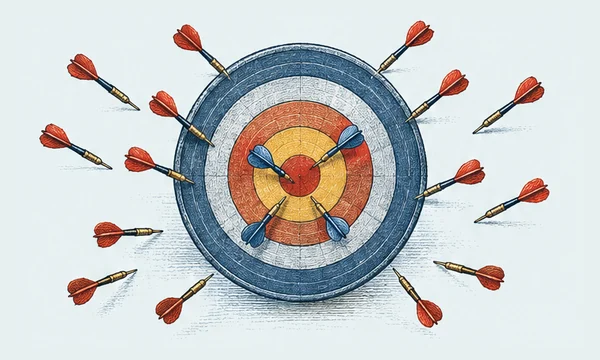
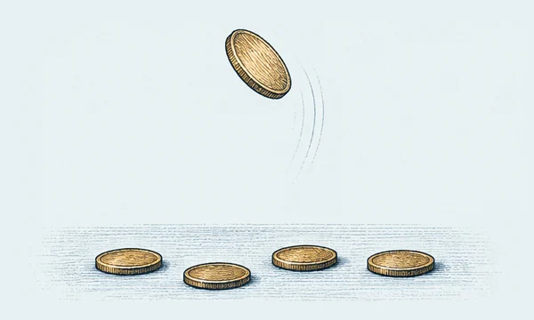
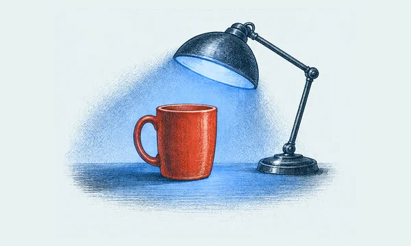
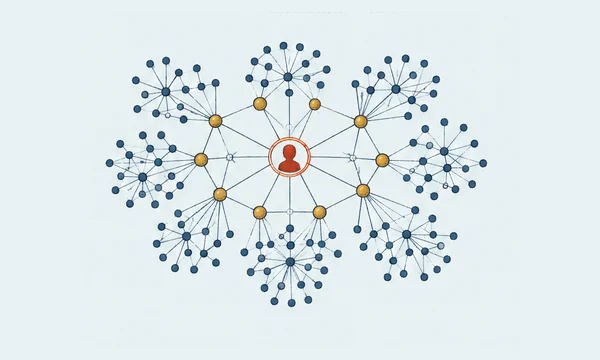

A Little Wonder collection
Beyond the Obvious
Follow an ordinary idea until it becomes extraordinary.
10 illustrated discoveries10 discoveries to explore
The Host Knows Where the Goat Is
Two doors remain closed, so switching feels like a coin toss. It isn’t—provided the host follows the rules.
The Room Is Full of Birthday Pairs
With 23 people in a room, a shared birthday is about as likely as not. The surprising part is how many pairs are quietly being compared.

When the Average Reverses the Story
A treatment can look better in every subgroup—and still look worse when all patients are pooled.
Why Numbers Favor the Small First Digit
In many datasets, numbers begin with 1 more often than 9. It sounds like nature has a favorite digit, but scale is doing the work.

Why Extreme Results Often Calm Down
A student gets an unusually low score, studies hard, then scores closer to their usual level. Did the study session cause all the improvement? Not necessarily.
A Positive Test Is Not the Whole Story
A test can catch every case and still produce mostly false alarms when the condition is rare.

The Coin Doesn’t Remember
After eight heads in a row, tails can feel overdue. For a fair coin, the next toss still has a 50–50 chance.
The Smaller Object Feels Heavier
Lift two boxes with the same mass, one small and one large. The small one may feel heavier—even when you know the scale says otherwise.

The Red Mug Under Blue Light
Change the light in a room and the wavelengths reaching your eyes change too. Yet your red mug usually still looks red.

Why Your Friends Seem More Popular
On average, your friends may have more friends than you do. It is not a trick of social media; it is a feature of how networks are sampled.
An unplanned detour
What will you find?
Sometimes the best place to begin is anywhere.